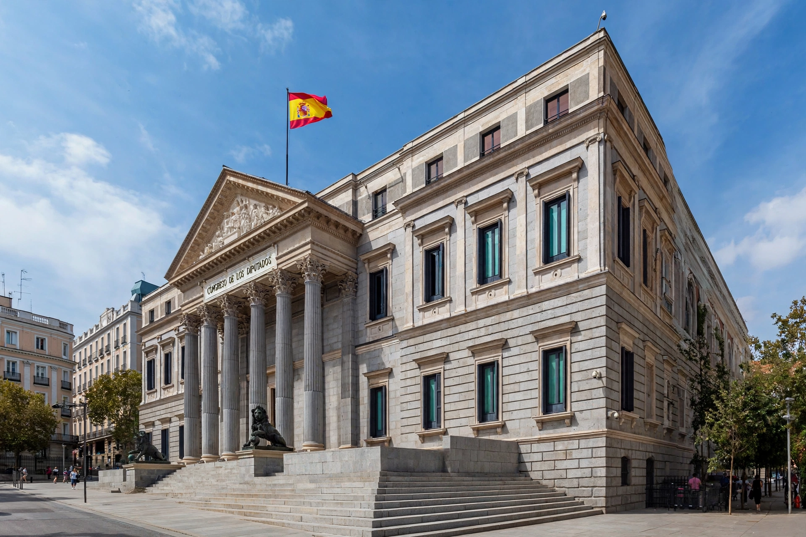

| Polity type | Unitary parliamentary constitutional monarchy |
| Constitution | Constitution of 1978 |
| Head of state | King (Felipe VI, since 2014) |
| Head of government | President of the Government (prime minister) |
| Legislature | Cortes Generales: Congress of Deputies (350) and Senate (266) |
| Territorial units | 17 autonomous communities, 2 autonomous cities |

The politics of Spain take place under the Constitution of 1978, which established a parliamentary constitutional monarchy after the transition to democracy following the death of Francisco Franco in 1975. Spain is a decentralised unitary state — the "State of Autonomies" — in which considerable power is devolved to 17 autonomous communities.
The King is head of state, sanctions laws, formally appoints the President of the Government and acts as supreme commander of the armed forces, but executive power rests with the government. The President of the Government (equivalent to a prime minister) is nominated by the King after consultation and must win an investiture vote in the Congress of Deputies; the president directs the Council of Ministers and domestic and foreign policy.
The Cortes Generales is bicameral: the Congress of Deputies (350 members, elected by proportional representation in provincial constituencies using the D'Hondt method) holds the decisive legislative and investiture powers, while the Senate (266 members, partly directly elected, partly appointed by regional parliaments) is a chamber of territorial representation with weaker, mostly suspensive powers.
For three decades after 1982 politics was dominated by two parties: the centre-left Spanish Socialist Workers' Party (PSOE) and the centre-right People's Party (PP). The party system fragmented after the 2008 financial crisis: Podemos (founded 2014) and Ciudadanos surged in 2015, the far-right Vox entered parliament in 2019, and Spain had its first coalition government since the Second Republic in January 2020 (PSOE with Unidas Podemos). Regional nationalist and separatist parties — notably in Catalonia and the Basque Country — frequently hold the parliamentary balance of power; the 2017 Catalan independence referendum and unilateral declaration of independence, declared illegal by the Constitutional Court, triggered direct rule under Article 155 and remains the defining territorial crisis of the democratic era.
An independent judiciary is headed by the Supreme Court; the Constitutional Court reviews the constitutionality of laws. Autonomous communities such as Catalonia, the Basque Country and Galicia have their own parliaments, governments and official languages, within the constitutional formula of the "indissoluble unity of the Spanish Nation" and guaranteed autonomy of its nationalities and regions.